01 / 16
トップ — ヒーロービジュアル

良い点
ナビゲーションにパナソニックロゴが入っており、大手ブランドとの関係性が視認できる。
良い点
ネイビー×ゴールドの配色は「信頼感・安定感」を感じさせる。製造業として適切な印象。
問題点
キャッチコピーが「自転車組立のプロフェッショナルとして活躍しませんか」のみ。「なぜここで働くべきか」が一切伝わらない。競合他社と差別化できていない。
問題点
https でアクセスするとSSLエラーが発生。求職者が「危険なサイト」と判断して即離脱するリスク。
改善点
「パナソニックの現場で40年」「年間休日126日」など具体的な強みをファーストビューに配置。SSL対応で信頼性を確保。
02 / 16
会社紹介 — ABOUT
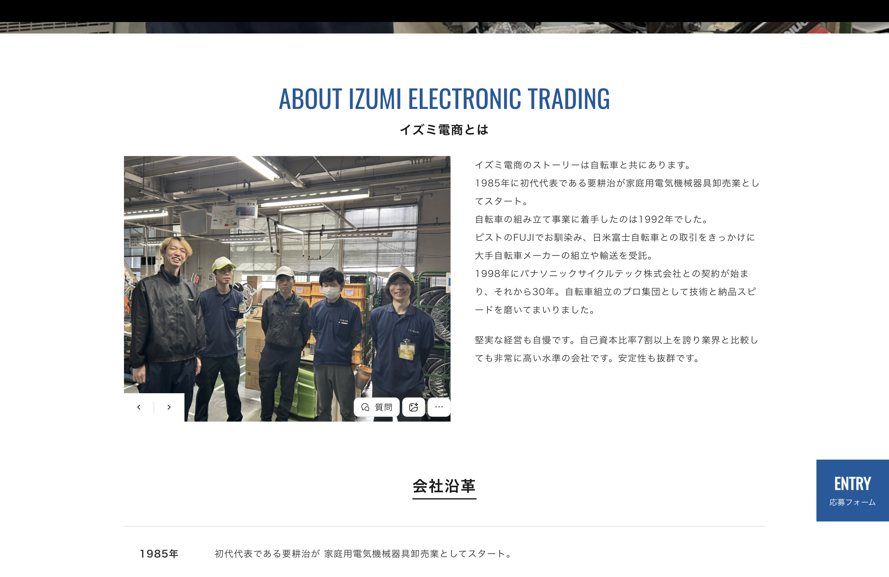
良い点
会社の概要・創業年・事業内容がテキストで丁寧に記載されている。情報量は十分。
良い点
工場内の写真があり、実際の職場環境をある程度イメージできる。
問題点
「40年のパナソニック実績」という最大の強みが文章の中に埋もれており、一目でわからない。
改善点
「40年」「9名の少数精鋭」「柏原市」などをカード型・数字型で視覚的に強調する。
03 / 16
会社沿革
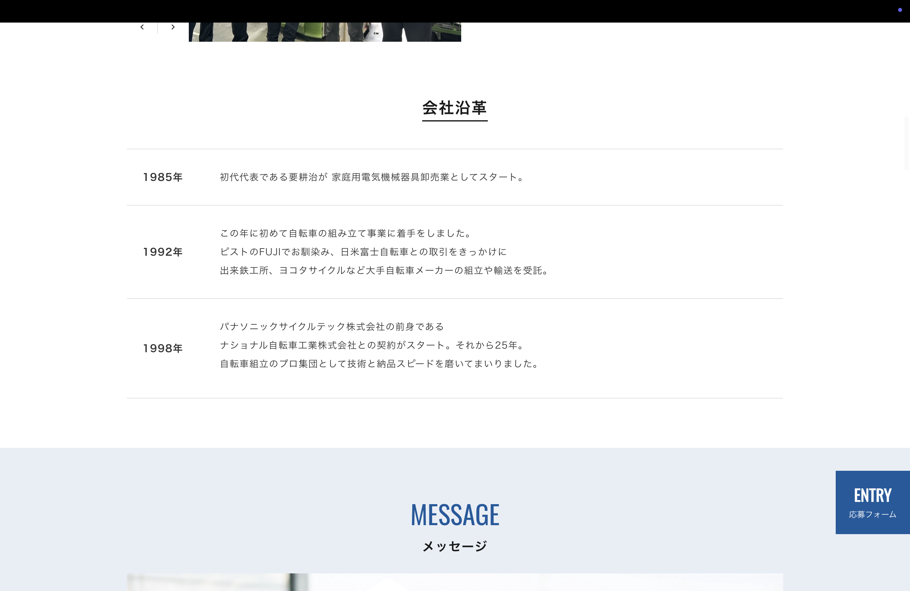
良い点
創業からの歴史が年表形式で整理されており、長年の実績の根拠として機能している。
問題点
採用ページとして見たとき、沿革は求職者が最も見たい情報ではない。優先度が高すぎる位置に配置されている。
改善点
沿革はABOUTセクションの補足として折りたたみ表示にするか、ページ下部へ移動。上部には「スタッフの声」「給与・休日」を優先配置する。
04 / 16
代表メッセージ（モーダル表示）
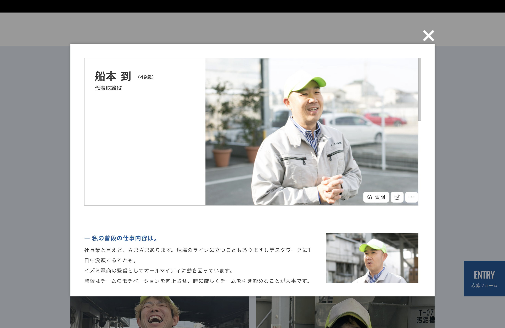
良い点
代表のメッセージが存在すること自体は大きな資産。「どんな人が経営しているか」は求職者が必ず気にする情報。
良い点
代表の写真が掲載されており、顔が見える経営者として信頼感を与えられる。
問題点
モーダル（ポップアップ）表示のため、開かないと読めない。多くの求職者がそのままスクロールして見逃している可能性が高い。
改善点
モーダルを廃止し、ABOUTセクションにインライン表示。代表の言葉を「採用に込めた想い」としてQ&A形式で見せることで印象が大きく変わる。
05 / 16
メッセージ — スタッフ一覧

良い点
代表・野口さん・岡さんの3名が写真付きで掲載されている。「誰と働くか」が見えることは採用サイトの核心的な価値。
良い点
役職（ラインリーダー、サブリーダー）まで記載されており、組織の階層・キャリアパスが想像できる。
問題点
各スタッフへのリンクもモーダル前提。写真の下に短いコメントのみで、「この人はどんな人？」「入社してどうだった？」という肝心の情報がない。
改善点
「入社前の不安は？」「この仕事のやりがいは？」「休日の過ごし方は？」などQ&A形式のインタビュー形式に昇華。写真と言葉を組み合わせたカード型で見せる。
06 / 16
スタッフメッセージ — 野口 孝文（ラインリーダー）
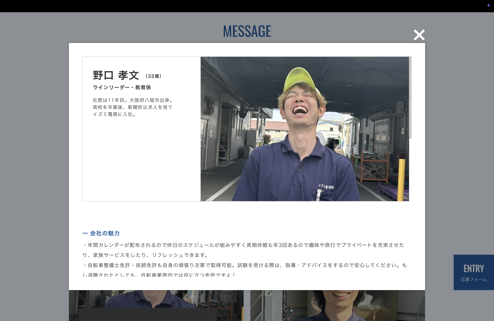
良い点
「この仕事に向いている人」「仕事の楽しさ」など、求職者が知りたい内容が具体的に書かれている。コンテンツとして非常に価値が高い。
問題点
モーダル内にしか存在しないため、多くの求職者がこの情報を見ていない可能性が高い。最も重要なコンテンツが最も見られにくい場所にある。
改善点
このメッセージの内容をそのまま活用し、「STAFF VOICE」セクションとして独立させる。Q&A形式に再構成すれば、そのまま強力なコンテンツになる。
07 / 16
スタッフメッセージ — 岡 浩之（サブリーダー）
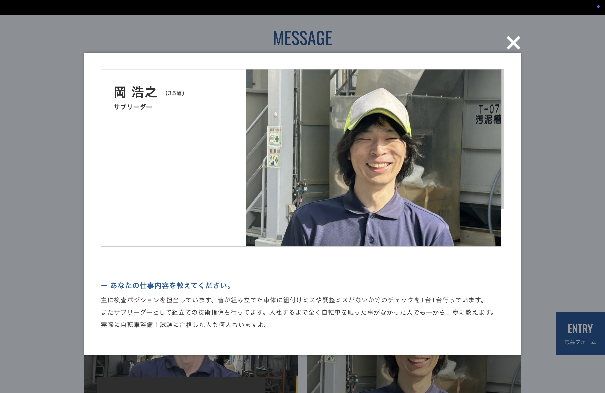
良い点
「入社のきっかけ」「仕事の特徴」など、同様に内容の密度が高い。既存コンテンツとして活用できる素材が揃っている。
問題点
野口さんと同様にモーダル内表示のみ。「働き方」「休日」などの具体的な数字（126日など）に触れた内容が薄い。
改善点
「年間休日126日は本当にあるか？」「残業は実際どうか？」といった求職者の疑問に正面から答える内容を追記してVOICEセクションに掲載する。
08 / 16
募集要項 — 仕事の内容・求めている人材
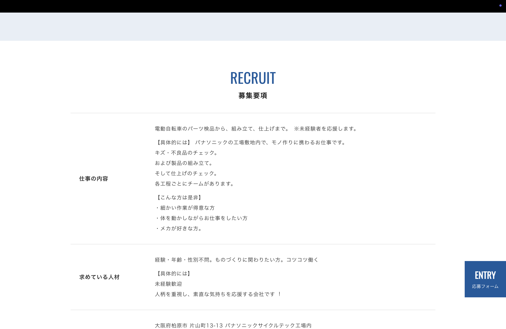
良い点
「未経験者歓迎」「丁寧な研修あり」が明記されており、参入ハードルを下げるメッセージがある。
問題点
テキストが長く、表組みの中に情報が均一に並んでいるため、重要な情報が目立たない。「パナソニック製品を扱う」という特別感が伝わってこない。
改善点
「仕事内容」を箇条書き＋アイコンで整理。「パナソニックブランドの製品を手がける」という文脈を冒頭に出す。
09 / 16
募集要項 — 勤務地
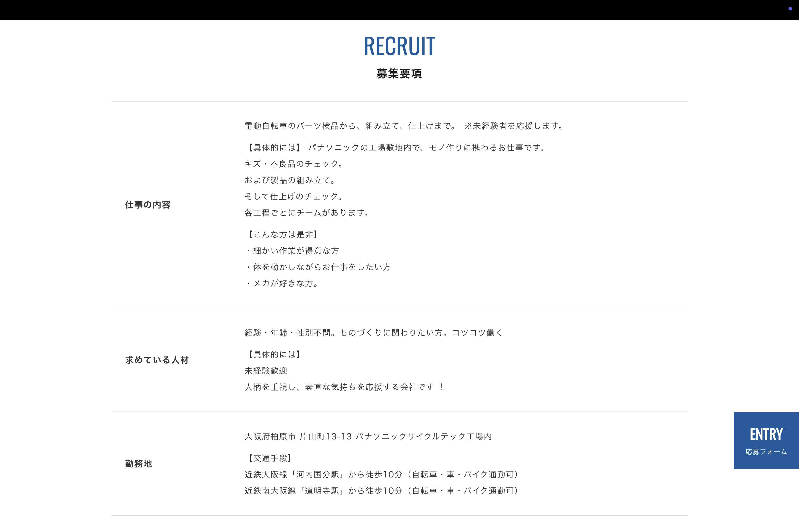
良い点
住所・最寄り駅・車でのアクセス情報が記載されている。求職者が通勤可能かを判断するのに必要な情報は揃っている。
問題点
地図（マップ）がないため、場所のイメージができない。住所だけでは柏原市がどこかわからない求職者も多い。
改善点
Google Map を埋め込み表示。「近鉄大阪線沿い・大阪市内から〇〇分」のような周辺アクセス情報を追加し、近隣居住者へのアピールを強化する。
10 / 16
募集要項 — 給与・勤務時間・休日
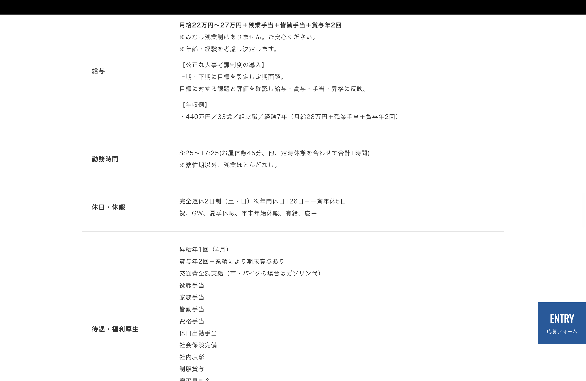
良い点
月給22〜27万・賞与年2回・年間休日126日という情報が揃っており、数字自体は競合と比べて十分に魅力的。
問題点（最重要）
「年間休日126日」が表の1行として埋もれている。求職者が流し読みするとほぼ気づかない。最大の武器が最も見えにくい状態になっている。
改善点
「126日」「月22〜27万」「賞与年2回」を大きな数字＋横並びカードで全面表示。ヒーローの直下に配置し、スクロールしなくても目に入る位置にする。
11 / 16
募集要項 — 待遇・福利厚生
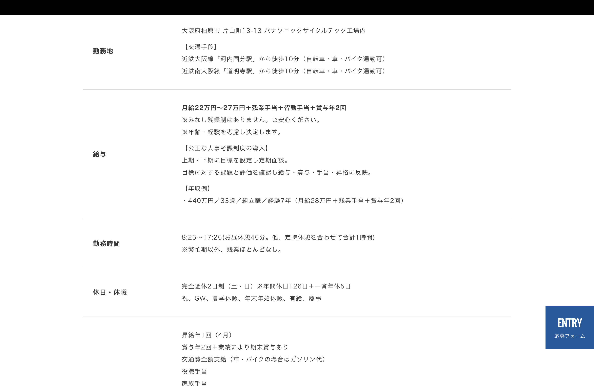
良い点
社会保険完備・交通費支給・制服貸与など、標準的な待遇が揃っている。「出張整体（月1回）」という珍しい福利厚生が記載されている。
問題点
「出張整体」という他社にない超差別化ポイントが、他の福利厚生と同列で1行として並んでいる。全く目立っていない。
改善点
「出張整体（月1回）」は専用のハイライトボックスで別出しして強調。「製造業でこれができる会社は少ない」という文脈を添えると差別化になる。
12 / 16
交通アクセス
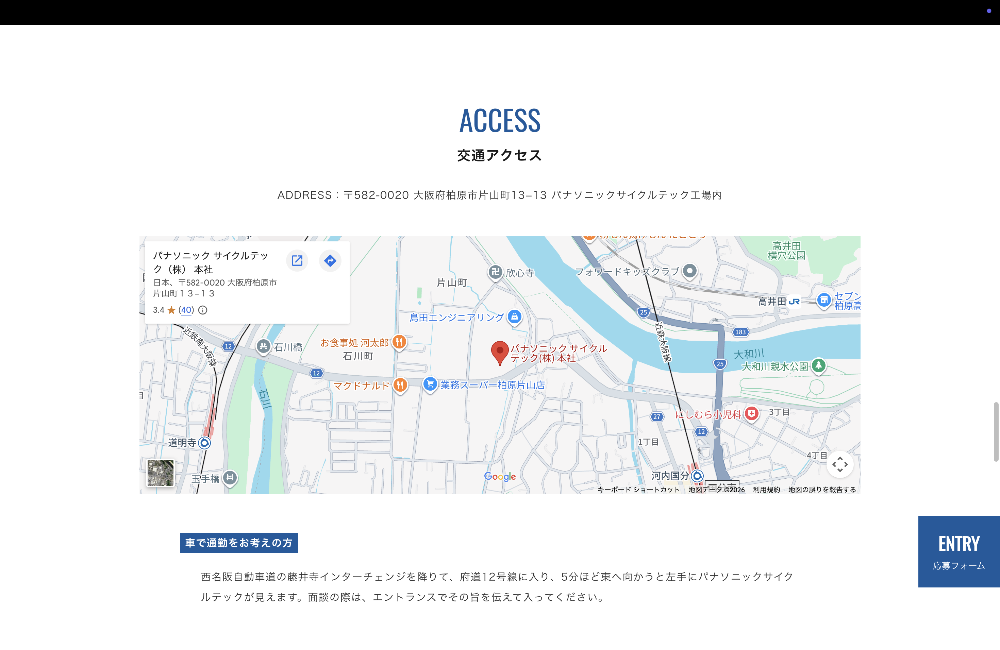
良い点
地図が埋め込まれており、場所のイメージができる。電車・バス・車の複数アクセス手段が記載されている。
問題点
募集要項（09）の勤務地欄には地図がなく、別ページのアクセスセクションにしか地図がない。情報の配置が分断されている。
改善点
地図は募集要項内に統合。1ページで全情報が完結する設計に変更する。
13 / 16
柏原市の紹介
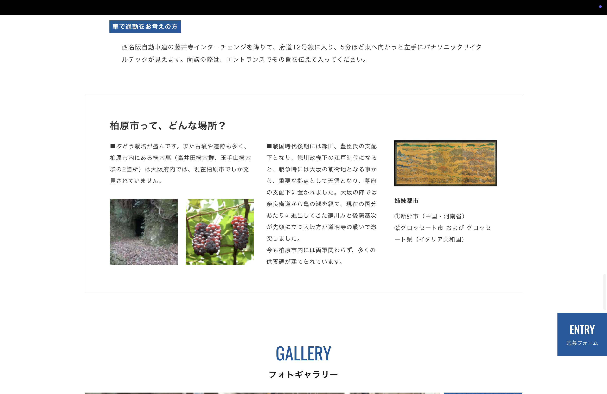
問題点
柏原市の観光・地域情報は採用サイトとして優先度が低い。求職者は「この街で働けるか」は気にするが、観光情報は不要。
改善点
このセクションは削除かページ最下部へ移動。代わりに「周辺の生活環境（スーパー・駐車場・通勤利便性）」を簡潔に触れる程度に留める。
14 / 16
フォトギャラリー
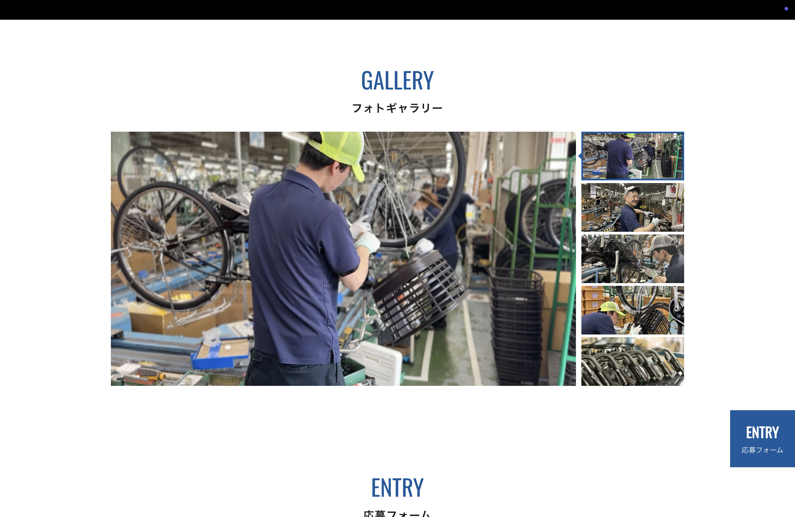
良い点
実際の工場・作業環境の写真があることは大きな強み。求職者は「どんな場所で働くか」をビジュアルで確認したがっている。
問題点
写真にキャプションがなく、何を見ているのかがわからない。「どの工程の写真か」「誰が写っているか」の説明があると信頼度が大きく上がる。
改善点
写真にキャプション（「組立ライン / 検査工程 / 出荷前確認」など）を追加。ヒーロー下に大きく1枚使い、工場の実際の雰囲気を最初に伝える配置にする。
15 / 16
応募フォーム — ENTRY
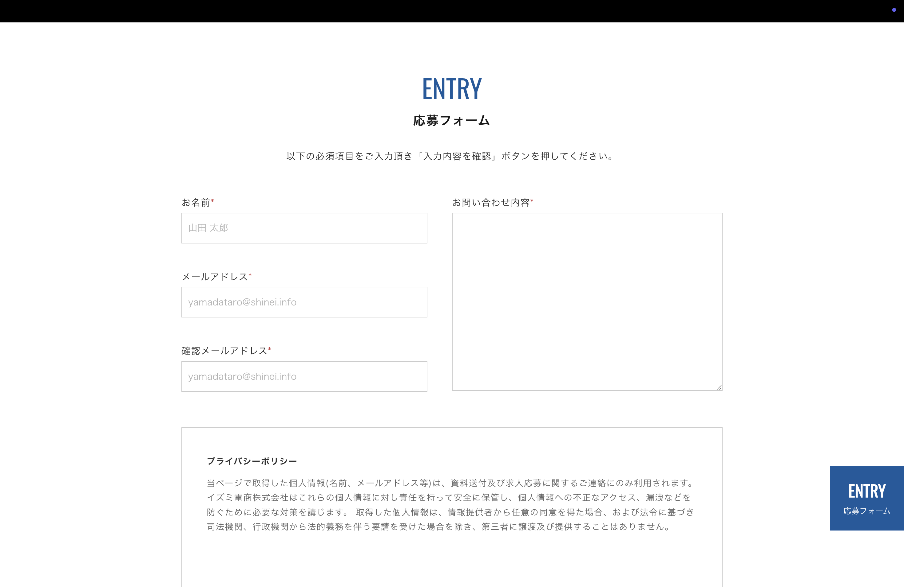
良い点
フォームが存在し、直接応募できる仕組みがある。Indeed等の外部サイトに依存しない応募経路を持っていることは重要。
問題点（最重要）
応募手段がこのフォーム1択。「まだ迷っている」「話だけ聞きたい」という求職者には選択肢がなく、ほとんどが離脱している。フォーム送信はハードルが高い。
問題点
フォームへ誘導するCTAがページ上部にない。「読んで応募しようと思ったが、どこで応募できるかわからない」というケースが発生している可能性。
改善点
「フォーム」「LINE」「電話」の3接触手段を用意。ナビバーに常時CTAを設置。「まずは話だけでもOK」というコピーで心理的ハードルを下げる。
16 / 16
フッター
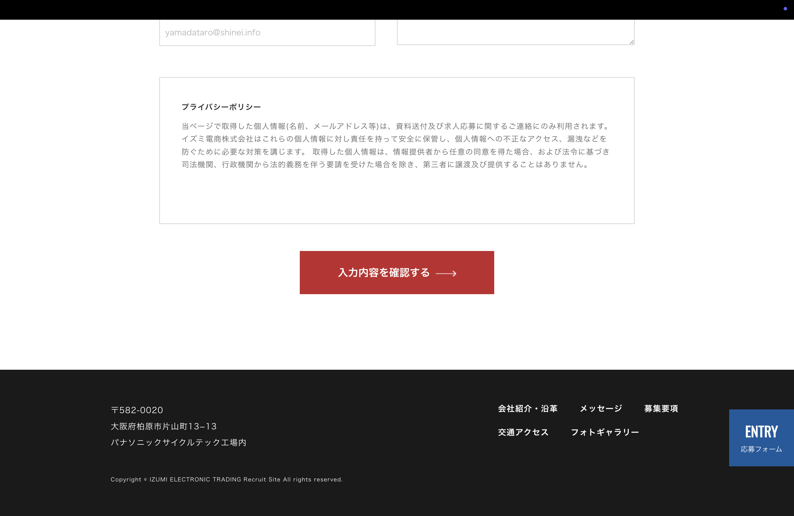
良い点
会社名・住所・電話番号が記載されており、最低限の連絡先情報がある。
問題点
フッターに応募ボタンや問い合わせ導線がない。ページの最後まで読んだ求職者が次にどうすれば良いかわからない。
改善点
フッター直前に強力なCTAセクション（ENTRY）を設置。「ページを最後まで読んだ人＝最も応募意欲が高い人」を確実に取りこぼさない設計にする。